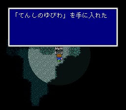
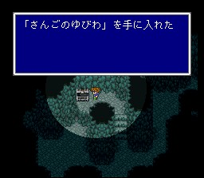

차원의 틈새 동굴
동굴지역에 도착해서, 세이브존을 지나가면 웬 로봇이 얼쩡거립니다. 바로 고대인의 최종병기, 오메가입니다. 싸우기 싫으면 피해갈 수 있습니다. FF5를 대표하는 강적 중 하나로, 전기에 약점이 있지만 강력한 공격을 합니다. 싸우려면 전원 화염의 반지나 산호의 반지를 장착하고 싸웁시다. 레벨올리는 조합을 걸고 마법검 선더가 이도류난타를 하면 잡을 수 있습니다. 이기면 상징적 아이템인 오메가의 훈장을 줍니다.
도서관에 가면 트윈타니아, 신룡, 오메가 등에 대한 정보가 있습니다. 탁자의 책처럼 생긴 스위치를 건드리면 도서관 바깥은 차원성 가는 통로로 변하는데, 그와 동시에 책계열 보스인 아판다가 나타납니다. 책이니까 불로 지져 줍시다.
나가면 차원성으로 가는 통로가 펼쳐져 있습니다. 차원성으로 들어갑시다.